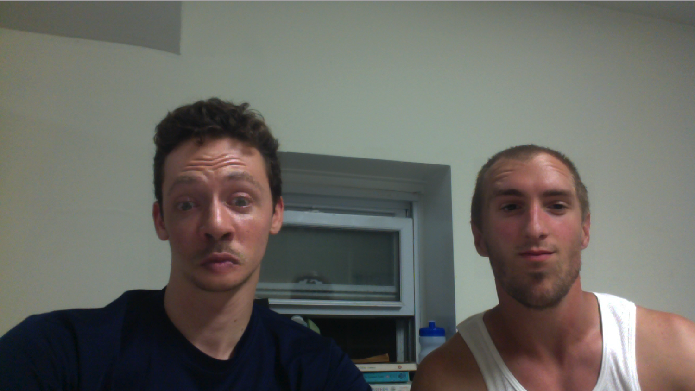

Face-Swapping in Real Time
Computer Vision, Spring 2016

Most recently, I worked with a partner to implement a facial swapping program in Python/OpenCV. Faces are detected using OpenCV's feature-based cascade classifiers, running on Viola-Jones facial recognition. We blended using Laplacian pyramid blending, blending low-frequency features over a large distance and high-frequency features over shorter distances. Our results were best when the images and video were well aligned and of similar depth. Thanks to Professor Zucker for the help and direction :)
In an extension, we added an optional eye-swapping feature with some interesting (and sometimes monstrous) results.